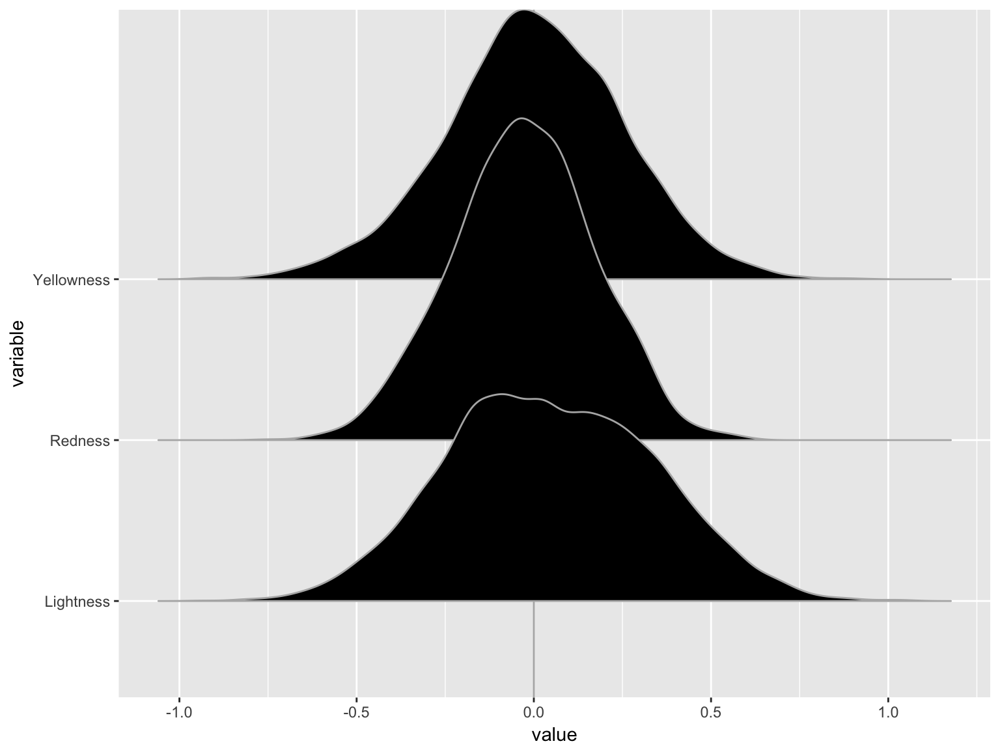

Introduction
Edit content in the *.Rmd and poster.css files to write up your poster and style it. The poster output is best best viewed and printed in Chrome (though limited testing has also been done in Firefox). The previewer built into RStudio has difficulties with the layout CSS, so it is best to refresh the generated html file in a dedicated browser.
For now, the title section of the poster is automatically generated from the yaml header in the markdown file. Options for logos or other fields may be added later. By default, the poster is an A0 portrait size, but this is easily adapted at the top of the CSS file (and may gain user-friendly aliases later for size and orientation).
Currently, there are a few conventions to define the poster layout. Use level 1 sections (#) to denote main divisions of content. Assigning a {.col-x} class, where x is 1–3, will stretch the container across the page width with x equal subcolumns, using Flexbox. The actual content goes inside of level 2 containers (## Block title here). There are also a few convenience classes, such as formatting a QR code block. The markdown source for the poster perhaps provides the best documentation by example.
Ultimately, one of the main objectives of this project is to avoid manually tweaking the spacing, element-by-element, of content in PowerPoint or another program. Instead, define the desired layout, page size, and other parameters get the spacing details automatically. (work in progress)
Method
As an rmarkdown template, this format makes it easy to include plots and other analysis directly generated in R. By default, the raw code is hidden. The following plot of cars data is the classic example from R Markdown skeleton files…
## Picking joint bandwidth of 0.0421

…along with the corresponding statistical summary.
Images can also be loaded by file path using the standard Markdown syntax. For example, some figures, such as illustrations, may be easiest in other software or analysis from other software (or collaborators who use different tools). Other standard markdown commands should work out-of-the box, though their CSS styling has not yet been tested.
Summary
This repository is under development and should be considered alpha-level software. Do not use it directly for academic or professional content without having a proper backup to fully compile your posters. The CSS classes and/or notation are not finalized and may break without warning.
This package will be updated as I make new posters for research, but it’s still a work in progress. Installation of this package is easy using the devtools package: simply run devtools::install_github("bbucior/drposter"). After installation, the format will be available as an R Markdown template in the “New R Markdown” wizard.
 For more information, please visit the project page at https://github.com/bbucior/drposter. Feel free to report issues, pull requests, or general comments on Github.
For more information, please visit the project page at https://github.com/bbucior/drposter. Feel free to report issues, pull requests, or general comments on Github.